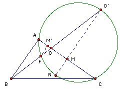
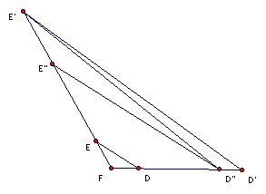

The sides of the triangle ABC subtend the same angles at the point F inside the triangle. The lines BF, CF meet the sides AC, AB at D, E respectively. Show that AB + AC >= 4 DE.
Solution

Let the ray BF meet the circumcircle of AFC again at D'. Since ∠AFC = 120o, ∠AD'C = 60o. ∠AFD = 180o - ∠AFB = 60o. So ∠ACD' = ∠AFD' = 60o. Thus AD'C is equilateral. Let M be the midpoint of AC and extend D'M to meet the circle again at N. Since AD'C is equilateral we have DM/MN = 3. Let M' be the foot of the perpendicular from F to AC. Since M is the midpoint of AC, we have MN ≥ M'F. So D'D/DF = D'M/M'F ≥ 3. Hence D'F/DF ≥ 4. Define E' similarly. A similar argument shows that E'F/EF ≥ 4.

Now take D" on the ray FD such that D"F/DF = 4 and similarly take E" on the ray FE such that E"F/EF = 4. Then D"E" = 4DE. The triangle E'D"D' has ∠E'D"D' ≥ ∠EFD > 90o, so D'E' > D"E'. Similarly ∠EE"D" ≥ ∠EFD, so D"E' ≥ D"E" and hence D'E' ≥ 4DE. But AB + AC = AE' +AD' ≥ D'E'. Hence result.

© John Scholes
jscholes@kalva.demon.co.uk
8 Aug 2003
Last corrected/updated 8 Aug 2003